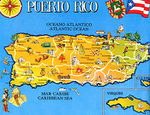

De: La Frikipedia, la enciclopedia extremadamente seria.
De: La Frikipedia, la enciclopedia extremadamente seria. De: La Frikipedia, la enciclopedia extremadamente seria.
| De la serie Países del planeta tierra: | |||||
| Portoe Reeko | |||||
|---|---|---|---|---|---|
| |||||
| Lema: Un pasito pa'lante María | |||||
| Himno: la gasolina
| |||||
| 
| |||||
| Capital | Plaza Las Américas | ||||
| Mayor ciudad | San Juan (También la ciudad con mas hoyos) | ||||
| Lenguas oficiales | Bosquimano, Eh'pañol, Spanglish, yanquéo, Español (Solo 1%) | ||||
| Gobierno | Consejo de Pastores | ||||
| Pastor Mayor | Un tal Juanito | ||||
| Área | España del sur | ||||
| Población | Puertorricenses y unos 5.000.000 de reggeatoneros | ||||
| Moneda | crisoles | ||||
| Zona horaria | GMT++ | ||||
| Dominio Internet | .puerto-rico | ||||
| Código telefónico | 00ring
| ||||
| Los hombres son puertoricenses mientras que las mujeres son puertorriqueñas | |||||
«Es pobre, es débil.»
~ Luis Muñoz Rivera sobre Puerto Rico
«¡Veeva Po'toe Reeeeekooo!»
~ Don King
«¡Lo mejor está por venir!»
~ Pedro Rosselló (Antes de que arrestaran cerca de 50 funcionarios de su gabinete)
«Voy a dar un alivio contributivo sin precedentes»
~ Anibal Acevedo Vilá 2004
«Seguiré postulándome hasta que me muera, aunque siga perdiendo»
~ Rubén Berríos
Puerto Rico es una isla remota (pero muy remota) en el Caribe. Situada en el testículo izquierdo de las Antillas, y aproximadamente a 936 años luz de Orión. Mejor conocida como "La Isla del Dr. Moreau", Puerto Rico brilló ante el mundo civilizado tras haberse filmado en su terreno la universalmente renombrada película Shanti a mediados de la decadencia del 90.
Contrario a lo que dicen los innumerables libros, historiadores mediocres, pseudo-intelectuales a los que no les crece la barba y domadores escolares, Puerto Rico no fue descubierto por Cristóbal Colón, sino por Cyberjesús allá en el 1820 a.C. Éste se encontró con que la isla estaba siendo habitada por unas inofensivas plantas sedentarias que se hacian llamar "Taínos", con los cuales convivió humildemente hasta que los feroces íberos tomaron por fuerza la isla y le expulsaron, aproximadamente en el año 24 a.C.
Los feroces íberos acabaron con los indios Taínos, sí. Pero no fue a través de esclavitud, hambre o mestizaje como nos hacen creer los domadores escolares, no señor. Los feroces íberos solían comérselos a la parrilla. Una virtuosa dama logró sobrevivir esta ordalía, y hoy en día trabaja como modelo en un programa televisivo llamado "No Te Duermas" donde se hace llamar "La Taína". Ésta dama es responsable del genocidio sistemático e indiscriminado de centenares de trillones de semillas puertorriqueñas, que bien podrían haberlos ayudado a ganarle a los dominicanos, o por lo menos podrían haberles ayudado a balancear (en algo) la tasa poblacional. Además de eso, te encontrarás por las calles de Puerto Rico algún que otro pelele que se hace llamar "Taíno".
A pesar de años y años de creerse españoles criollos (atención ponceños), evidencia y descubrimientos recientes apuntan hacia la indiscutible realidad de que los puertorriqueños son descendientes directos de los italianos.
Sólo días después de que los feroces íberos se comieran a todos los Taínos, una guerra sin precedentes estalló. Estados Unidos asomó una flota militar por Cuba, la reventó, culpó a España y procedieron a fuckearselos analmente, así tomando posesión de Cuba, Puerto Rico y otras cositas más.
Cierto, fueron muchas las veces que los indios Taínos se rebelaron contra los feroces íberos, pues no querían ser devorados (putos íberos). Pero una vez que los Estados Unidos tomaron posesión de la isla, todo esto acabó. Voluntariamente y con mucho amor, cambiaron ellos mismos su propia bandera e himno a unas versiones que le gustaran más a los militares estadounidenses que les gobernaban. Los puertorriqueños de hoy en día se enorgullecen en haber servido de monigotes (chatas) para la gran mayoría de las pastillas anti-conceptivas hoy disponibles en el mercado estadounidense. También se enorgullecen increiblemente de ser la cuarta jurisdicción de Estados Unidos que más hombrecitos verdes le regala a George W. Bush.
Como se planteó anteriormente, ya no existía necesidad para rebelarse, pues los estadounidenses no nos cocinaban a la parrilla (putos íberos). Sólo unos dos o tres terroristas esquizofrénicos abogaron por la separación a principios de siglo 20 d.C. Estudios recientes auspiciados por la Universidad de Puerto Rico muestran que estos no eran ni puertorriqueños, sino Ewoks enviados por Fidel Castro.
El 30 de octubre de 1950, el ejército estadounidense se vio forzado a destruir los municipios de "Jaleluya" y "Putuado" a través de bombardeo aéreo a causa de estos mismos terroristas esquizofrénicos, que habian tomado la decisión de comenzar un levantamiento armado. El Presidente Harry S. Truman le aseguró a la comunidad internacional que se trataba de un conflicto entre puertorriqueños. Aunque las razones exactas para el levantamiento aún no estan muy claras, se presume que a estos ewoks se les habia acabado su suministro café y ron Bacardi. Los supervivientes del bombardeo aseguran que durante la quijotada, estos salvajes corrian por las calles del pueblo, botella de ron Bacardi vacia en mano, gritando "¡Fuego a Babilonia!". A uno de estos esquizofrénicos anti-estadounidenses se le fusiló en un paredón en Putuado, mientras el otro fue enviado a una cárcel en el extranjero o algo así.
Uno de estos ewoks aparentemente sobrevivio los bombardeos estadounidenses del levantamiento del 50, pero gracias a la incondicional ayuda y sacrificio por parte de las agencias gubernamentales en Puerto Rico, el FBI pudo dar con su paradero y gloriosamente acabarlo de una vez y por todas el pasado 23 de septiembre de 2005.
La bandera de Puerto Rico es exactamente idéntica a cualquier otra bandera del mundo. Los mismos insipidos colores: rojo, azul y blanco. Nada de creatividad envuelta.
"Frankly my dear, I dont give a damn" Dr. Pedro Rosello (ex-gobernador de PR)
Consiste mayoritariamente de beber ron caña y café, comer arroz con habichuelas, pasteles, bacalaitos y lechón asado. Los puertorriqueños sufren de un problema de identidad cultural y nacional grave. Mejor dicho, se aprovechan de este los muy malcriados. Son ciudadanos americanos y juran lealtad a la bandera estadounidense, pero cada vez que hay un certamen de belleza a nivel mundial, las Olimpiadas o su equipo de baloncesto vence al Dream Team de Estados Unidos, estas insólitas criaturas muerden la mano que les alimenta y les mantiene, y deciden apoyar a su equipo "nacional".
Reglas para estar "casi" seguro en Puerto Rico:
Puerto Rico tiene un sistema de gobierno muy peculiar. No por su estructura, sino por la calidad del distinguido e inteligente personal electo que lo compone. En el sector legislativo, Puerto Rico tiene a la ilústre Cámara del Senado, compuesta por monos salvajes importados de África. En la Cámara de Representantes, el caso es aún más peculiar. Un autroproclamado Mesías (o Pedro Rosselló, cual prefiera) dirige ahí una manada rinocerontes y otras especies de fieles seguidores, cuya misión confesa es derrocar al presunto Gobernador de Puerto Rico, un tal Anibalocho, desnudarlo y obligarlo a escuchar El Fari por el resto de su vida.
Puerto Rico además cuenta con un gobernador electo. Ojo: muchos dirán que el gobernador incumbente es un Anibalocho, pero en realidad este no es más que una cortina de humo inventada por los judíos. El veradero gobernador incumbente de Puerto Rico se llama Alex Trujillo. El honorable superintendente de la honorable Policía de Puerto Rico, Pedro "Ron Cañita" Toledo está en estos precisos momentos haciendo los arreglos para organizar un contingente especial de todas las fuerzas policiacas: locales y federales, para tratar de dar con el paradero de Alex Trujillo y entrevistarle, para ver si realmente es o no nuestro gobernador.
También cuenta con un "Comisionado Residente en Washington". El incumbente comisionado es un tal Luis Logroño. Aunque, fuentes veridicas y de alta credibilidad afirman que este es un nombre falso, y que en realidad se trata de Milhouse, del infame programa Los Simpsons. El "Comisionado Residente en Washington" es el exacto equivalente a un congresista. Excepto que no puede votar, y necesita unanimidad del resto de los Klingons para poder abrir su linda boca. Y como si el cabrón gobierno no estuviese mal...segun los rumores el tal Milhouse ese fue electo como gobernador en las elecciones del 2008.Despues de aber chupado mucho...jaja y el pendejo partido de Independentistas para solpresa de muy pero muy pocos...fue eliminado...pero todavia se creen lo suficiente capacitados para seguir hablando la misma MIERDA de siempre.
| |
|---|
| Bahamas | Barbados | Dominica | Granada | Guyana | Haití | San Cristóbal y ¿Nieves? | San Vicente y las Granadinas | Santa Lucía | Trinidad y Tobago | Uruguay | Venezuela |
Autor(es):
{kind=link}